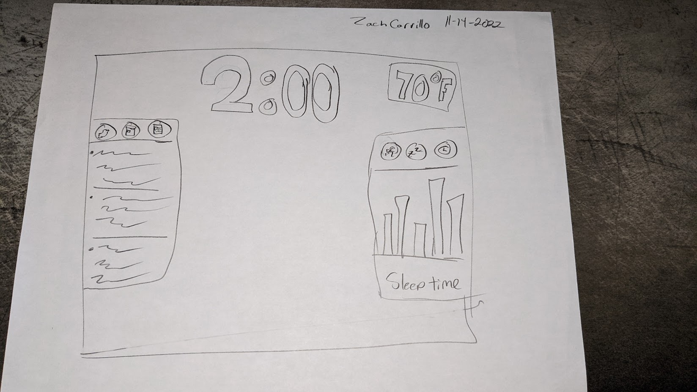

General information is on the left and top
Left side bar has buttons to switch between viewing social media, calendar events, news
Health-related information is on the right side bar where you can switch between Exercise, Sleep, and Time in mirror charts.
B/A
Mirror Implementation using P5.js
Mirror shows all general information requested using weather api and json files.
Health related information is also provided through a github file.
Advanced Feature added is the ability to drag all windows around the mirror.